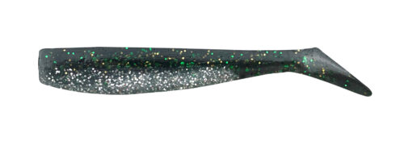
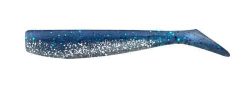
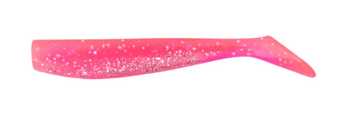
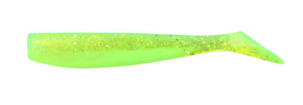

アルカリシャッド
（ALKALISHAD）
アルカリシャッド（ALKALISHAD）はCOREMAN（コアマン）のソフトワームです。
アルカリシャッドは、VJ（バイブレーションジグヘッド）やRJ（ローリングジグヘッド）にセットするコアマン純正のワームです。VJやRJには最初からアルカリシャッドがセットされていて、交換用として買い足すのが定番。ベイトに合わせた豊富なカラーで、ワームだけ色を変えてローテーションできるのが魅力です。

画像出典:コアマン公式HP
スペック
- メーカー
- COREMAN（コアマン）
- タイプ
- シャッドテールワーム
- サイズ
- 65mm／75mm／90mm／110mm
- 対応ジグヘッド
- VJシリーズ・RJ-10 など
- カラー
- 75mmは全29色
- ターゲット
- シーバス
▼今すぐチェック

アルカリシャッドの特徴
ジグヘッドとの組み合わせで、ワームだけ替えてローテーションできる純正ワーム
-
VJ・RJにセットする純正ワーム
VJ-10には65mm、VJ-12・RJ-10には75mmがセットされている（メーカー記事より）。純正の組み合わせなので、ジグヘッド本来のアクションを出しやすい。
-
ベイトに合わせた豊富なカラー
75mmはカタクチイワシ・マイワシ・トウゴロウイワシ・イナッコ・イカナゴ・シラウオなど、ベイトを意識した全29色。ケイムラやチャート系のアピールカラーもそろう。
-
大型ベイト用の110mm
シリーズ最大の110mmは、VJ-36との組み合わせで強い波動を出すサイズ。マイワシパターンやコノシロパターンなど、大きめのベイトを食べているシーバスに効果を発揮する。
アルカリシャッドの選び方
まずは使っているジグヘッドに合わせてサイズを選ぶのが基本。VJ-12・RJ-10なら75mm、大きめのVJ-36なら110mmというように、純正の組み合わせから選ぶと失敗が少ない。
カラーは、その日のベイトに合わせるのが基本。イワシ系のベイトならカタクチイワシやマイワシ、濁りや朝夕はピンク・チャート系と、ワームだけ替えてローテーションしましょう。
アルカリシャッドの向いている使い方
VJやRJを使っていて、ワームがちぎれたり、カラーを変えたくなったりした時の交換用として持っておくのが一番の使いどころ。
ワームは消耗品なので、よく使うカラーは予備を多めに持っておくと安心です。
ワンポイント
ワームをジグヘッドに刺すときは、まっすぐ刺すのがアクションを安定させるコツです。曲がって刺さると、泳ぎが崩れたり回転したりする原因になります。
コアマン公式サイトでは2026年10月時点で一部サイズのページが準備中です。最新のサイズ・カラーは公式サイトで確認してください。
サイズの使い分け
| サイズ | 主な組み合わせ | 得意な場面 |
|---|---|---|
| 65mm | VJ-10 など | 小さめのベイト・ライトなジグヘッドに |
| 75mm | VJ-12・RJ-10 など | もっとも出番の多い標準サイズ |
| 90mm | VJ-22・VJ-28 など | 中〜大型ベイト・飛距離が欲しい時に |
| 110mm | VJ-36 | マイワシ・コノシロなど大型ベイトパターンに |
※65mm・75mm・110mm の組み合わせは公式・メーカー記事の記載より。90mm の組み合わせは目安です。ほかに「アルカリ」（60／70／83mm）もあり、IJ-16にはアルカリ70mmがセットされています。
オススメカラー
アルカリシャッド75mmは全29色展開。シーバス狙いでオススメのカラーを厳選して紹介します。

#001 カタクチイワシカタクチイワシを食べている時の基本カラー。

#002 マイワシマイワシパターンに合わせるナチュラルカラー。

#008 ピンクバック見やすくアピールも強いピンク。濁りや朝夕に。

#017 チャートチャートしっかり目立つチャート。強い濁りやローライトに。
画像出典:コアマン公式HP
アルカリシャッドに似ているルアー
-
 VJ-16
コアマン
詳細はこちら＞
VJ-16
コアマン
詳細はこちら＞
アルカリシャッドをセットして使う、コアマンの定番バイブレーションジグヘッド。
-
 ローリングジグヘッド RJ-10
コアマン
詳細はこちら＞
ローリングジグヘッド RJ-10
コアマン
詳細はこちら＞
アルカリシャッド75mmがセットされているジグヘッド。スレたシーバスにナチュラルに見せたい時に。
-
 アイアンジグヘッド IJ-16
コアマン
詳細はこちら＞
アイアンジグヘッド IJ-16
コアマン
詳細はこちら＞
鉄板バイブとワームを融合したジグヘッド。こちらにはアルカリ70mmがセットされている。